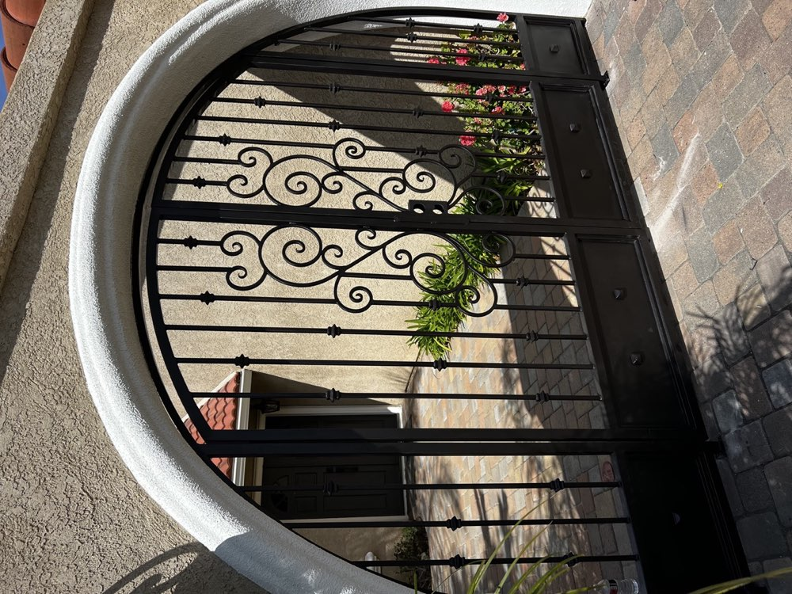
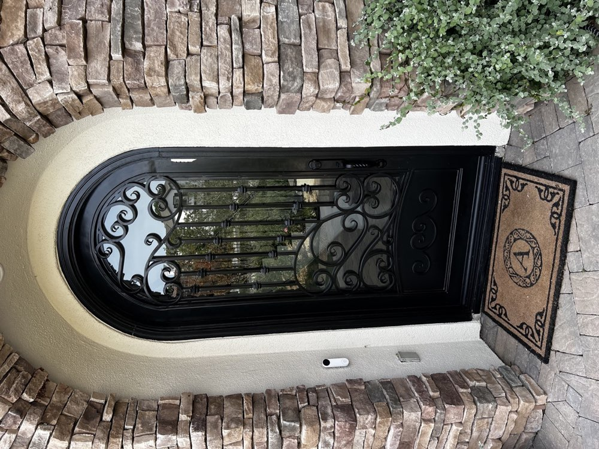
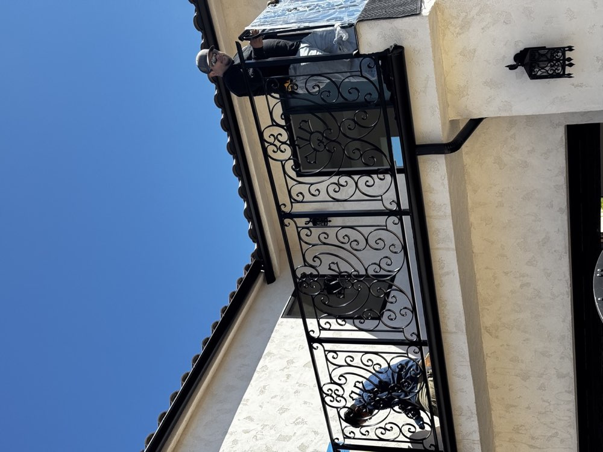

Hand-formed iron gates, ornamental railings, fences and doors made for Santa Barbara's Spanish Colonial homes and Montecito estates, fabricated in our own shop in Ventura.
Send your name and number. We call back the same day with a real ballpark — not a runaround.
☎ (805) 396-9984Santa Barbara is one of the few places in California where wrought iron is part of the architecture, not an afterthought. Red tile roofs, white stucco, arched openings and hand-formed iron go together here, and a gate or railing that looks generic stands out for the wrong reasons. Montecito asks for the same craftsmanship at estate scale: long driveway gates, courtyard entries, balcony railings and perimeter fencing that have to look right from the street and hold up for decades.
We design and fabricate every piece in our Ventura shop, about 30 to 40 minutes south on the 101, and install it with our own crew. That means one team from the first measurement to the final adjustment, and no hand-offs between a designer, a fabricator and an installer.



We come to your property, measure everything and talk through the style you want. Then you get a written quote.
We draw the piece to fit your opening and your architecture, and provide drawings and finish details for your architect or design review if needed.
Every gate, railing and door is cut, formed and welded in our Ventura shop, then finished for the coastal climate.
The same team that built it installs it, and we stay until it swings, latches and looks right.
Yes. Our fabrication shop is in Ventura, about 30 to 40 minutes up the 101 from Santa Barbara and Montecito, and we install gates, railings, fences and doors there regularly. We build everything in our own shop and bring our own crew to install it.
Yes. Hand-formed scrollwork, arched gates, clavo details, ornamental balcony railings and wrought iron doors with glass are some of the pieces we build most often. Send us photos of your home or of existing iron you want to match and we will design around it.
Many Santa Barbara and Montecito properties go through architectural or design review before ironwork can be installed. We can provide the drawings, dimensions and finish details your architect or the review board asks for, so the approval process has what it needs.
It can, if it is built and finished for salt air. For coastal properties we discuss galvanizing under the powder coat, stainless hardware and the right finish for how close you are to the water, and we tell you honestly what maintenance to expect.
Yes. We repair and restore older ironwork: cutting out rusted sections, re-creating missing scrollwork or pickets, re-securing loose posts and refinishing. On historic homes we would rather save original iron than replace it.
Call (805) 396-9984 or send your name and number through the quote form on this page. We will set up a free on-site estimate and give you a written quote. We also offer in-house payment plans, with no outside lender.